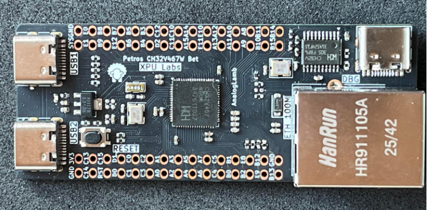
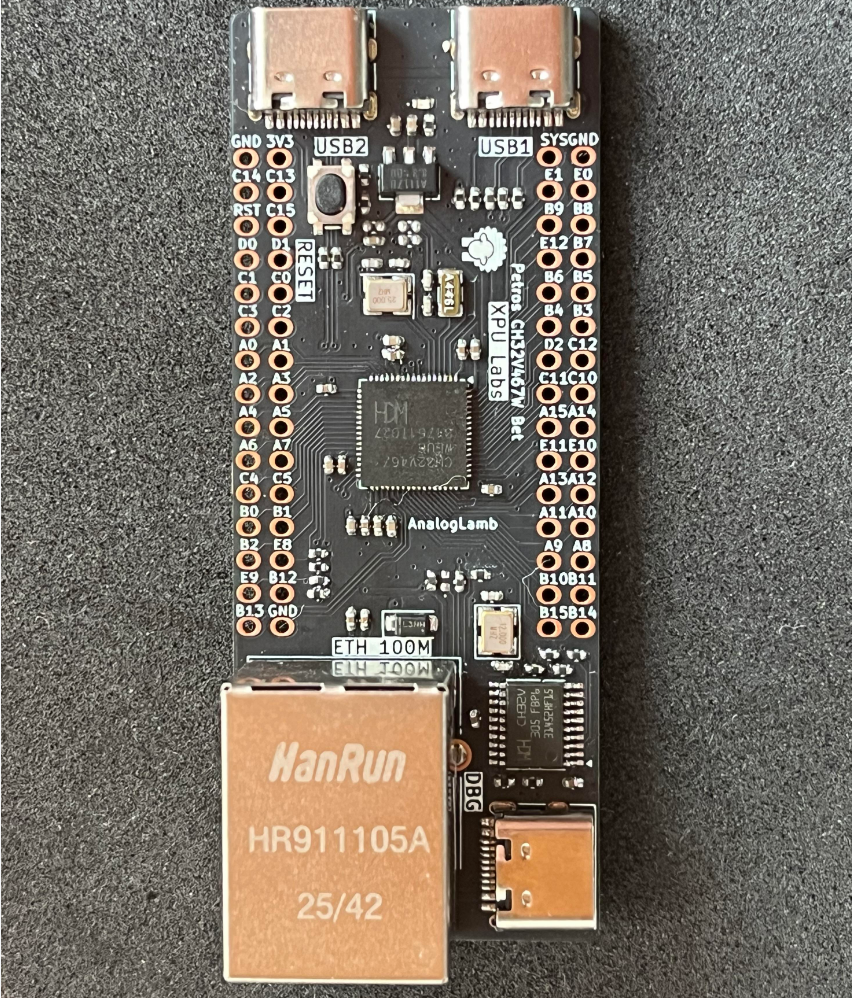
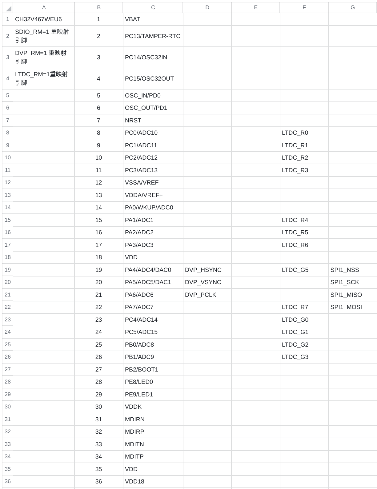
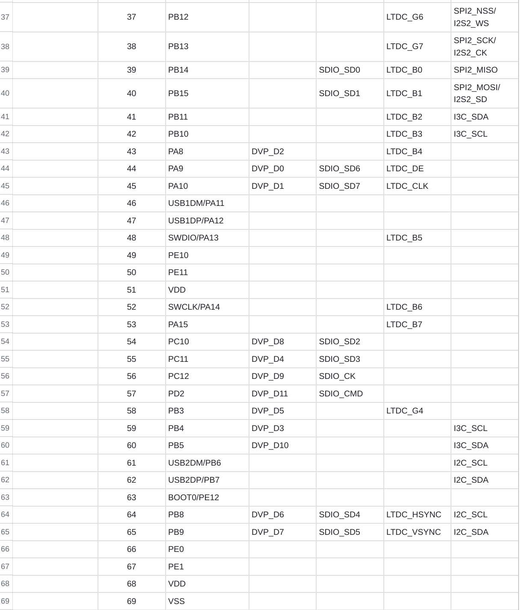
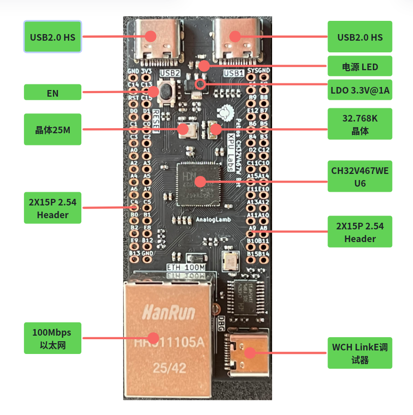
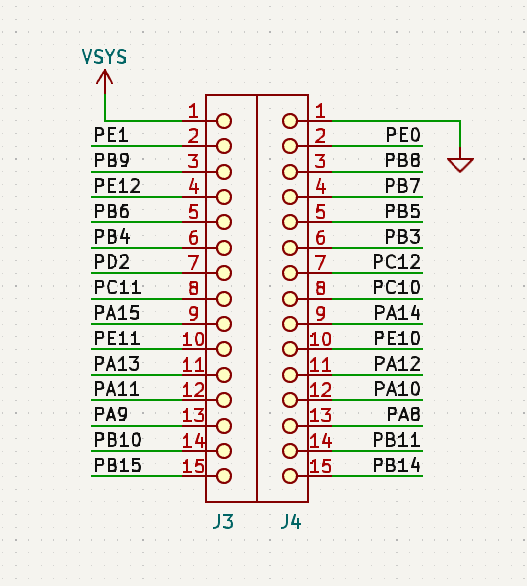
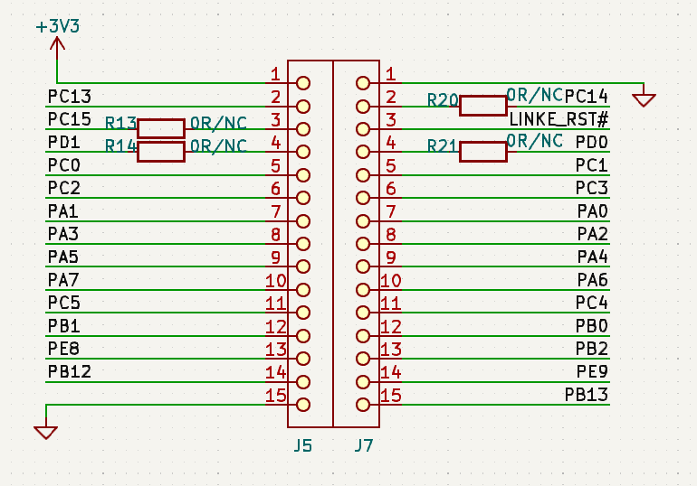

Petros CH32V467 Bet开发板使用手册
本手册介绍Petros CH32V467 Bet开发板的使用方法。
1. 产品介绍 - Overview
CH32V467是由南京沁恒公司开发的32位微控制器，用于开发嵌入式产品。其最大的特点在于支持双USB2.0高速接口与RISC-V架构的向量指令集，同时集成DVP， LCD和8MB PSRAM。正是因为这两个特点，XPU实验室开发了Petros CH32V467 Bet开发板。
Petros CH32V467 Bet开发板使用的是CH32V467WEU6微控制器。它是QFN68的封装，板形外观紧凑，其大小为52mm x 21mm。带有两个USB2.0 Type-C母座高速接口，用于开发双USB2.0高速设备。使用芯片100Mbps的以太网接口，可快递实现网络应用开发。为了方便调试开发，板子集成了WCH LinkE 1V3调试器，支持SWD和UART。

2. 芯片特点 - Features
-
青稞32位RISC-V3V内核处理器，最高200MHz系统主频
-
支持V向量指令集，支持并行计算
-
200KB SRAM，992KB Flash
-
8MB扩展PSRAM存储器(仅CH32V467)
-
工作电压：2.9~3.6V
-
多种低功耗模式：睡眠/停止/待机
-
上/下电复位、可编程电压监测器
-
2组共24路通用DMA
-
1组运放比较器
-
1个随机数发生器RNG
-
2组12位DAC转换
-
2组12位ADC转换
-
6组定时器
-
2组USB2.0高速主机/设备接口（480Mbps内置PHY）
-
10个USART接口
-
1个CAN接口（2.0B主动）
-
SDIO接口（MMC、SD/SDIO卡及CE-ATA）
-
FSMC存储器接口
-
150MHz DVP数字图像接口
-
LCD-TFT显示控制器LTDC
-
可寻址RGB（ARGB）
-
1组I2C接口、1组I3C接口、3组SPI接口、2组I2S接口
-
内置百兆以太网MAC及10M/100M PHY
-
77个I/O口，可以映射到16个外部中断
-
CRC计算单元，96位芯片唯一ID
-
单线或双线调试模式
3. 产品规格 - Specifications
- 主芯片：CH32V467WEU6 QFN68 RISC-V核支持向量指令集
- 内部集成8MB PSRAM
- 双USB2.0 HS Type-C接口
- 100Mbps以太网接口
- 板载WCH LinkE 1V3，支持SWD与UART方便调试
- 所有GPIO引到排针
- 复位按键与电源指示
- 尺寸：70mm x 28mm

4. 硬件 - Hardware
CH32V467WEQ6的管脚定义


资源接口

引脚


5. 软件开发 - Software
CH32V467使用MounRiver II IDE集成开发环境，支持Windows & Linux.
板载WCH LinkE 1V3，支持SWD与UART，插上USB Type-C线即可使用。
-
产品手册：CH32V407DS0.PDF
-
集成开发环境(IDE)：MounRiver Studio(MRS)
-
技术手册：CH32V407RM.PDF
-
SDK: CH32V407/467 SDK
6. 教程 - Tutorials
-
B站-相关短视频
视频持续更新中.....
7. 资源 - Resources
-
原理图
-
例程
请联系 xpulabs.taobao.com 淘宝店客服
8. 常见问题 - FAQ
持续更新中.....